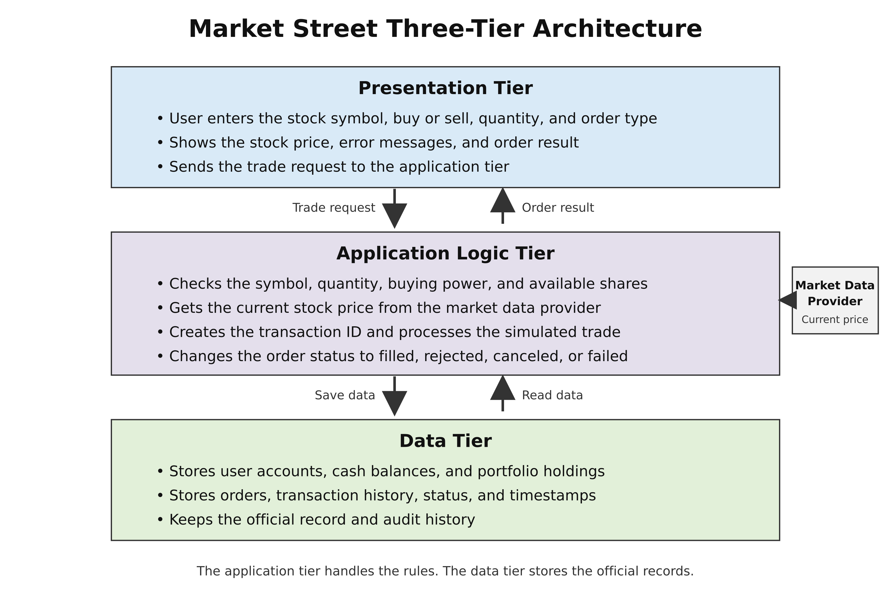
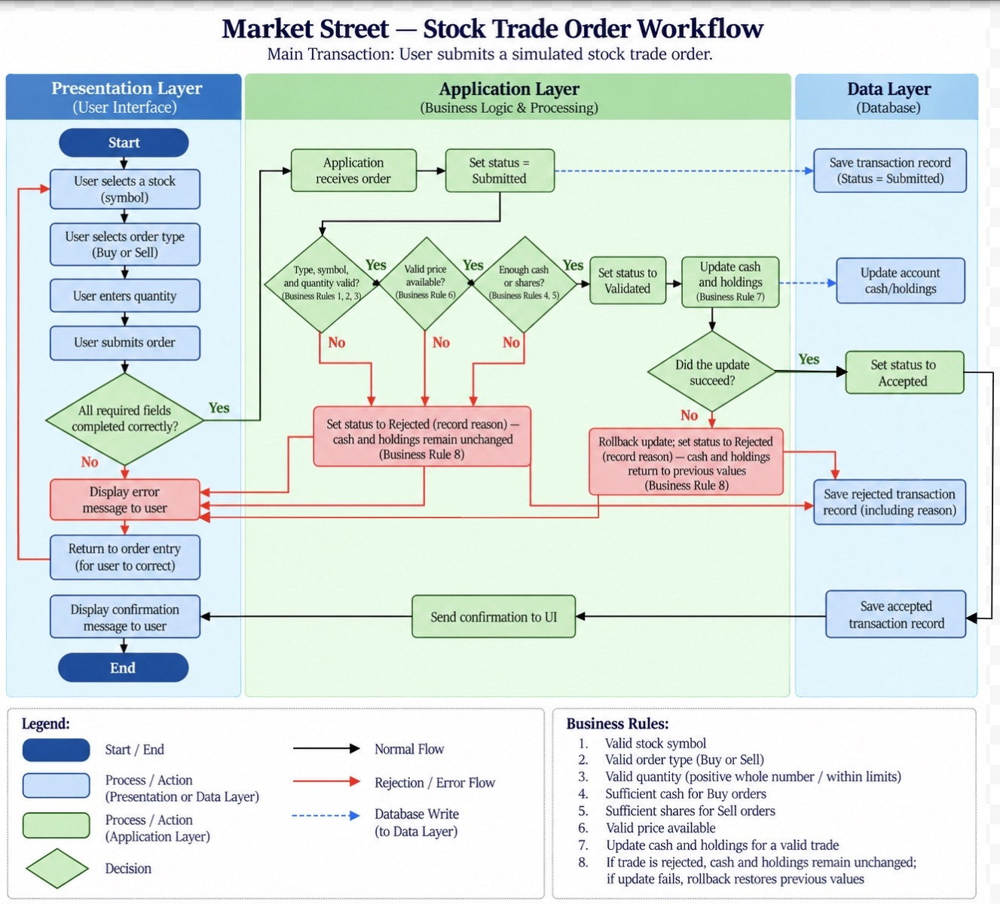
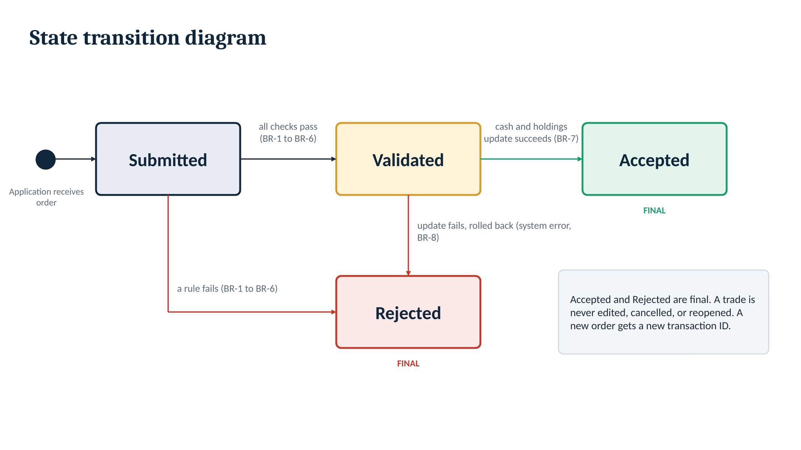
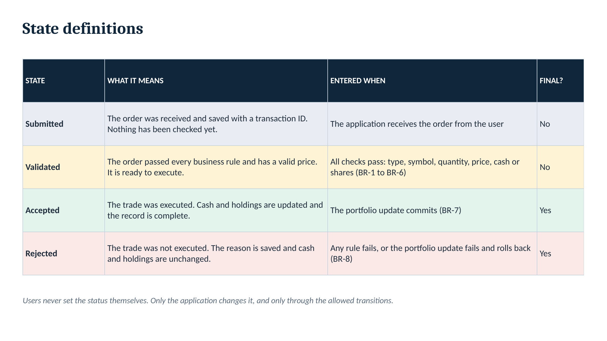

Click or press Esc to close
MIS 3371 · First Check-In
Paper Trading Platform — System Design
Press → or click to begin
Out of scope: real money, bank links, margin, short selling, options, crypto.
Transaction ID · User · Stock · Action · Shares · Execution price · Total value · Timestamp · Status

| Responsibility | Presentation | Application Logic | Data |
|---|---|---|---|
| Collect input | ✓ | ||
| Required-field & immediate feedback | ✓ | ||
| Display status & confirmation | ✓ | ||
| Transaction ID | ✓ | ✓ | |
| Official status | ✓ | ✓ | |
| Audit timestamps | ✓ | ✓ | |
| Critical business rules | ✓ | ||
| Authorization | ✓ |



Caught in the browser
BR-1 to BR-6
System error after validation
MarketStreet · MIS 3371
Click or press Esc to close